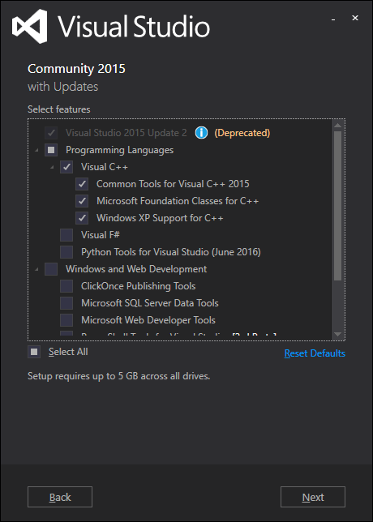
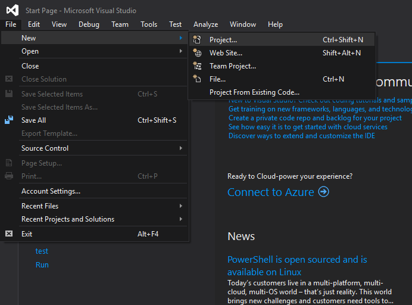
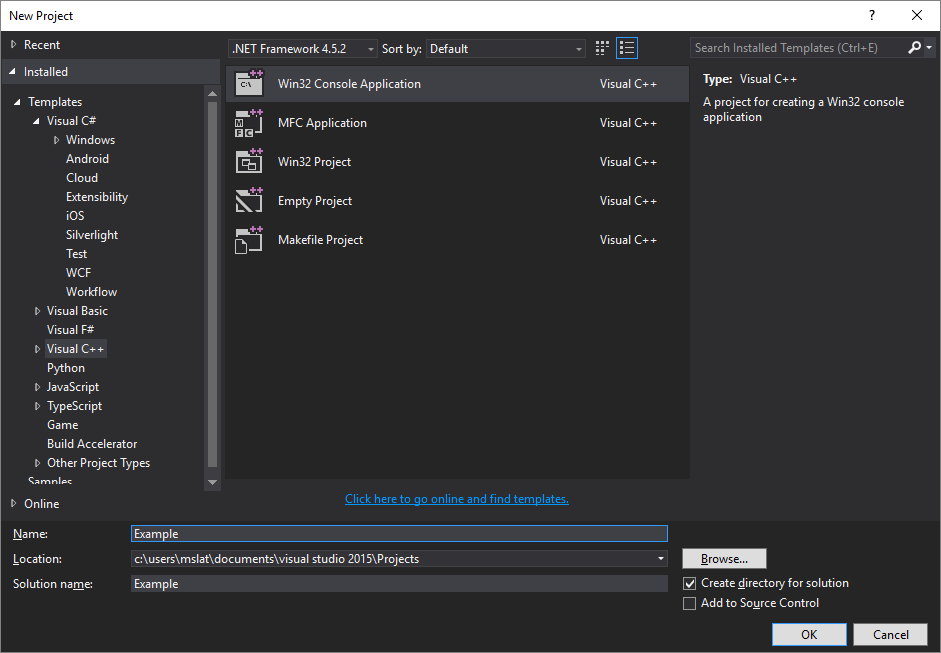

Install
To start, go to the visual studio website and download VS Community 2015. It's completely free, but limited to personal use.

Open the installer, and you should see a screen like this.

Under custom install, check Visual C++. You can install other components if you wish.
Creating a Project
Once the install is finished, create a new project:
Choose console application and name your project:
You should get this window:

Select empty project:

Your project should now be created.
Adding Files
To add a file:

Select C++ file and enter the file name:

Write a hello world program:

You are now ready to build your project.
Build
Hit F7 or select build:

Hit F5 or select start debugging:

Your program should run: